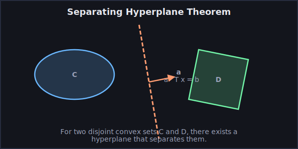

02. The Geometry of Feasibility: Convex Sets
Date: 2025-10-28 · Duration: 90 min · Tags: sets, geometry, foundational, theory
Overview: This lecture introduces the geometric soul of convex optimization: the convex set. While Lecture 01 gave us a high-level view of a "convex problem," this lecture provides the tangible foundation. We will define what makes a set "convex" and explore the most important examples—shapes like polyhedra, balls, and cones that form the feasible regions for a vast range of practical problems. We will also develop a set of powerful rules, or "operations," that allow us to build complex convex sets from these simple building blocks. The lecture culminates in the Separating and Supporting Hyperplane Theorems, fundamental results that provide the geometric intuition for the powerful duality theory and optimality conditions we will encounter later in the course.
Prerequisites: A solid understanding of linear algebra from Lecture 00 (vector spaces, norms, PSD matrices) and the basic definition of a convex optimization problem from Lecture 01.
What We Won't Cover: This lecture is exclusively about the geometry of *sets*. We will not discuss convex *functions* (that is the topic of Lecture 03), nor will we delve into algorithms or duality theory. Our focus is on defining the shapes that form the domains of optimization problems.
Connections to Other Lectures: The feasible sets of all the problem classes we saw in Lecture 01 (LPs, QPs, etc.) are shown to be convex using the tools developed here. The matrix theory from Lecture 00 is extended to define the positive semidefinite (PSD) cone. The hyperplane theorems from this lecture are the essential geometric foundation for duality (Lecture 05) and the Karush-Kuhn-Tucker (KKT) optimality conditions (Lecture 06).
Learning Objectives
After this lecture, you will be able to:
- Define and Interpret Convexity: Provide the formal definitions of affine and convex sets, and explain the geometric meaning of a convex combination and a convex hull.
- Identify Key Convex Sets: Recognize the most common convex sets that appear in optimization, including hyperplanes, halfspaces, norm balls, ellipsoids, polyhedra, second-order cones, and the PSD cone.
- Construct Complex Convex Sets: Use convexity-preserving operations, such as intersection and affine mappings, to prove that a complicated set is convex by building it from simpler, known convex sets.
- Understand the Role of Hyperplanes: State the Separating and Supporting Hyperplane Theorems and explain their importance as the geometric basis for duality and optimality.
- Work with Dual Cones: Define the dual of a cone and prove the self-duality of important cones used in modeling, such as the non-negative orthant and the PSD cone.
- Verify if a Set is Convex: Given a mathematical description of a set, apply the definitions and operations to determine if it is convex.
1. The Building Blocks: Affine and Convex Sets
The geometry of feasible sets in optimization problems is built upon two fundamental ways of combining points: affine combinations and convex combinations.
- An affine combination of points $x_1, \dots, x_k$ is a weighted sum $\sum_{i=1}^k \theta_i x_i$ where the weights sum to one, $\sum \theta_i = 1$. These combinations describe objects like lines and planes.
- A convex combination is a special type of affine combination where the weights are also non-negative, $\theta_i \ge 0$. These combinations describe "filled-in" objects like line segments and triangles.
Affine Sets
A set is affine if, for any two points in the set, the entire line passing through them is also in the set. Formally, for any $x_1, x_2 \in C$ and any real number $\theta$, the point $\theta x_1 + (1-\theta) x_2$ is also in $C$.
A key result is that every affine set can be described as a linear subspace shifted by a vector. For instance, the set of solutions to a system of linear equations, $\{x \mid Ax=b\}$, is an affine set.
Convex Sets
A set is convex if the line segment connecting any two points in the set is entirely contained within the set. This is the crucial property that prevents a set from having any "dents" or "holes."

Figure 1.1: In a convex set, the line segment connecting any two points is fully contained in the set. This is not true for a non-convex set.
Convex Hulls
The convex hull of a set of points, written as $\mathrm{conv}(S)$, is the set of all possible convex combinations of those points. It can be visualized as the shape formed by stretching a rubber band around the outermost points of the set. The convex hull is, by construction, the smallest convex set that contains the original set $S$.

Figure 1.2: The convex hull of a set of points is the shape enclosing all of them.
Interactive Demo: Convex Set Checker
To build intuition, this widget lets you draw a 2D shape. The tool then tests for convexity by picking random pairs of points and checking if the line segment between them stays inside your shape. This provides a direct, hands-on feel for the definition.
2. Canonical Convex Sets: A Visual Dictionary
The following sets are the fundamental building blocks you will encounter in almost every optimization model. Recognizing them is a critical skill.
Hyperplanes and Halfspaces
A hyperplane is the set $\{x \mid a^\top x = b\}$ for $a \neq 0$. It's an affine, and therefore convex, set. A halfspace is the set $\{x \mid a^\top x \le b\}$, which is convex. Hyperplanes divide the space in two; halfspaces are everything on one side.
Ellipsoids
An ellipsoid is a set of the form $\mathcal{E} = \{x \mid (x-x_c)^\top P^{-1} (x-x_c) \le 1\}$ where $P$ is a symmetric positive definite matrix ($P \succ 0$). It can be seen as the result of stretching and rotating a Euclidean ball. Ellipsoids are convex, a fact we will prove shortly using our toolkit of convexity-preserving operations.
Widget: Ellipsoid Explorer
Manipulate the center $x_c$ and the matrix $P$ to see how an ellipsoid is defined. Observe how the eigenvalues and eigenvectors of $P$ correspond to the lengths and directions of the ellipsoid's principal axes. This provides a direct link between the algebraic definition and the geometric shape.
Polyhedra
A polyhedron is the solution set of a finite number of linear equalities and inequalities, $\mathcal{P} = \{x \mid Ax \preceq b, Cx=d\}$. Since it's the intersection of halfspaces and hyperplanes (which are convex), a polyhedron is always convex. Bounded polyhedra are called polytopes. This class includes common shapes like boxes, simplices, and any feasible set of a Linear Program.
Widget: Polyhedron Visualizer
This tool allows you to build a 2D polyhedron by adding or modifying linear inequalities of the form $a_i^\top x \le b_i$. See in real-time how each new constraint "cuts away" a part of the space to form the final feasible region. This is the geometry of Linear Programming.
Cones
A set $K$ is a cone if for every $x \in K$ and $\theta \ge 0$, we have $\theta x \in K$. A convex cone is a cone that is also a convex set. Important examples include:
- The Norm Cone: Given a norm $\|\cdot\|$, the set $\{(x,t) \mid \|x\| \le t\}$ is a convex cone. The most important instance is the second-order cone (or Lorentz cone), where the norm is the Euclidean norm.
- The Positive Semidefinite (PSD) Cone ($\mathbb{S}^n_+$): The set of all symmetric $n \times n$ matrices that are positive semidefinite. This is a crucial cone for advanced modeling, especially in control theory and combinatorial optimization via SDPs.
3. The Algebra of Convexity: Operations that Preserve Convexity
Proving that a set is convex from the first-principles definition can be tedious. A far more powerful and common approach is to construct a complex set from simpler sets that are known to be convex, using operations that are guaranteed to preserve convexity.
Intersection
The intersection of any collection of convex sets (finite or infinite) is convex.
Proof: Let $C = \cap_{i \in I} C_i$, where each $C_i$ is convex. Consider any two points $x, y \in C$. By the definition of intersection, $x$ and $y$ belong to every set $C_i$. Since each $C_i$ is convex, the line segment $\theta x + (1-\theta)y$ (for $\theta \in [0,1]$) must be in every $C_i$. Therefore, the segment lies in their intersection, $C$. Thus, $C$ is convex.
Affine Functions
Applying an affine function $f(x) = Ax+b$ to a convex set preserves convexity.
- Image: If $C$ is a convex set, then its image $f(C) = \{Ax+b \mid x \in C\}$ is convex.
- Preimage: If $D$ is a convex set, then its preimage $f^{-1}(D) = \{x \mid Ax+b \in D\}$ is convex.
Example Proof (Preimage): Take two points $x_1, x_2$ in the preimage. This means $f(x_1) \in D$ and $f(x_2) \in D$. Since $D$ is convex, the segment $\theta f(x_1) + (1-\theta)f(x_2)$ is in $D$. Because $f$ is affine, this segment can be rewritten as $f(\theta x_1 + (1-\theta)x_2)$. Since this point's image is in $D$, the point itself, $\theta x_1 + (1-\theta)x_2$, must be in the preimage.
Application: We can now easily prove that an ellipsoid is convex. An ellipsoid is the set $\mathcal{E} = \{x \mid (x-x_c)^\top P^{-1} (x-x_c) \le 1\}$. This can be rewritten as $\mathcal{E} = \{x \mid \|P^{-1/2}(x-x_c)\|_2 \le 1\}$. This is precisely the preimage of the unit Euclidean ball (which is convex) under the affine mapping $f(x) = P^{-1/2}(x-x_c)$. Since the preimage of a convex set under an affine map is convex, the ellipsoid is convex.
Widget: Convexity-Preserving Operations Builder
This tool lets you see these abstract rules in action. Start with simple, pre-defined convex sets like a square and a disk. Apply operations like intersection, affine transformation (scaling, rotation, translation), and Minkowski sum to see how they combine to form new, more complex convex sets.
4. The Deep Geometry: Separating and Supporting Hyperplanes
The theorems in this section are among the most important in optimization. They establish that convex sets, unlike non-convex ones, have a clean geometric structure that allows them to be neatly "separated" or "supported" by hyperplanes. This is the geometric basis for duality theory and optimality conditions.
The Separating Hyperplane Theorem
The theorem states that any two disjoint, non-empty convex sets can be separated by a hyperplane. In other words, if you have two convex shapes that do not overlap, you can always draw a straight line (or plane in higher dimensions) between them.

Figure 4.1: For two disjoint convex sets C and D, a hyperplane can be found that leaves one set on each side.
A More Detailed Look at the Proof
- The Core Idea: The proof hinges on finding the two closest points between the sets and constructing a hyperplane perpendicular to the line segment connecting them. For simplicity, let's assume the sets C and D are closed.
- Finding the Closest Points: Let's find points $c \in C$ and $d \in D$ that minimize the distance $\|c-d\|_2$. Because the sets are convex and closed, such a pair of points is guaranteed to exist and be unique.
- Constructing the Hyperplane: The separating hyperplane is defined by the vector $a = d - c$. This vector represents the direction of the shortest line segment between the sets. The hyperplane is then defined as all points $x$ satisfying $a^\top x = b$, where the offset $b$ is chosen to be halfway between the endpoints: $b = \frac{1}{2}(a^\top d + a^\top c)$.
- Verification: One can then show that for any point $x \in C$, we have $a^\top x \le b$, and for any point $y \in D$, we have $a^\top y \ge b$. This confirms that the hyperplane correctly separates the two sets.
The Supporting Hyperplane Theorem
A direct consequence of the separation theorem is the Supporting Hyperplane Theorem. It states that for any convex set, at any point on its boundary, we can draw a hyperplane that "supports" the set. This means the hyperplane touches the boundary point and the entire set lies on one side of it.

Figure 4.2: At any boundary point $x_0$, a hyperplane can be found that contains $x_0$ and keeps the entire set C to one side.
This theorem is fundamental to forming optimality conditions in constrained optimization problems, as it provides a geometric way to characterize the boundary of a feasible set.
Widget: Separating Hyperplane Visualizer
This widget brings the theorem to life. You can place two (disjoint) convex sets in a 2D plane. The tool will then computationally find and draw the separating hyperplane between them. Experiment with moving the sets closer together or changing their shapes to see how the separating plane adjusts.
5. Dual Cones
The concept of duality is central to optimization. The geometric starting point for this is the dual cone. The dual cone of a cone $K$ is defined as the set of all vectors that make a non-negative inner product with every vector in $K$:
$$ K^* = \{y \mid y^\top x \ge 0 \text{ for all } x \in K\} $$
The dual cone is always a closed, convex cone, even if the original cone $K$ was not.
Self-Dual Cones
Some of the most important cones in optimization are self-dual, which means that the dual of the cone is the cone itself ($K^* = K$). This property often corresponds to a deep symmetry in the problems that can be modeled with these cones.
- The non-negative orthant $\mathbb{R}^n_+$ is self-dual.
To prove that the dual of $K = \mathbb{R}^n_+$ is $\mathbb{R}^n_+$, we need to show that the condition ($y^\top x \ge 0$ for all $x \ge 0$) is equivalent to the condition ($y \ge 0$).
Part 1: Proving that if $y \ge 0$, then $y^\top x \ge 0$ for all $x \ge 0$.
This direction is straightforward. Assume $y \ge 0$, meaning all components $y_i$ are non-negative. Let $x$ be any vector in $\mathbb{R}^n_+$, so all its components $x_i$ are also non-negative. The inner product is:
$$ y^\top x = \sum_{i=1}^n y_i x_i $$
Each term in this sum is a product of two non-negative numbers, so each term is non-negative. The sum of non-negative numbers is itself non-negative. Therefore, $y^\top x \ge 0$. This shows that any vector in $\mathbb{R}^n_+$ is also in its dual.
Part 2: Proving that if $y^\top x \ge 0$ for all $x \ge 0$, then $y \ge 0$.
We will use a proof by contradiction. Assume that the condition "$y^\top x \ge 0$ for all $x \ge 0$" holds, but suppose that $y$ is *not* in $\mathbb{R}^n_+$.
If $y$ is not in $\mathbb{R}^n_+$, it must have at least one strictly negative component. Let's say component $k$ is negative, so $y_k < 0$.
Now, we need to find a vector $x \in \mathbb{R}^n_+$ that causes a contradiction. A simple choice is the standard basis vector $x = e_k$, which has a 1 in position $k$ and zeros elsewhere. This $x$ is clearly in $\mathbb{R}^n_+$.
Let's compute the inner product with this choice of $x$:
$$ y^\top e_k = y_1(0) + \dots + y_k(1) + \dots + y_n(0) = y_k $$
We find that $y^\top x = y_k$, which we know is less than 0. This contradicts our initial assumption that $y^\top x \ge 0$ for *all* choices of $x \in \mathbb{R}^n_+$.
Therefore, our supposition that $y$ could have a negative component must be false. This means all components of $y$ must be non-negative, so $y \ge 0$.
- The second-order cone is self-dual.
- The positive semidefinite cone $\mathbb{S}^n_+$ is self-dual.
Readings & Resources
- Required Reading: Boyd & Vandenberghe, Convex Optimization, Chapter 2. This chapter provides a comprehensive and rigorous treatment of all topics discussed here.
Problem Set with Solutions
Test your understanding of the geometry of convex sets. These problems cover all major topics from this lecture.
- Set Properties: Show that the set of points closer to a given point $x_0$ than a given set $S \subseteq \mathbb{R}^n$, defined as $C = \{x \mid \|x-x_0\|_2 \le \|x-y\|_2 \text{ for all } y \in S\}$, is convex.
- Operations: Prove that the intersection of a convex set and an affine set is convex using the basic definitions.
- Dual Cones: What is the dual cone of the set of all vectors with non-positive components, $K = \mathbb{R}^n_-$? Provide a proof.
Solutions
- Solution (Closer Points):
Goal: We need to prove that the set $C = \{x \mid \|x-x_0\|_2 \le \|x-y\|_2 \text{ for all } y \in S\}$ is convex.
Step 1: Simplify the inequality for a single `y`.
The core of the set's definition is the inequality $\|x-x_0\|_2 \le \|x-y\|_2$. Since both sides are non-negative, we can square them without changing the inequality's direction. This gets rid of the square roots and makes the expression easier to work with:
$$ \|x-x_0\|_2^2 \le \|x-y\|_2^2 $$
Now, we can expand the squared Euclidean norms using the identity $\|v\|_2^2 = v^\top v$:
$$ (x-x_0)^\top(x-x_0) \le (x-y)^\top(x-y) $$
Expanding the products gives:
$$ x^\top x - 2x_0^\top x + x_0^\top x_0 \le x^\top x - 2y^\top x + y^\top y $$
Step 2: Show the inequality defines a halfspace.
The term $x^\top x$ appears on both sides, so we can cancel it. We then rearrange the terms to group everything involving `x` on one side:
$$ 2y^\top x - 2x_0^\top x \le y^\top y - x_0^\top x_0 $$
Factoring out `x` gives:
$$ 2(y-x_0)^\top x \le \|y\|_2^2 - \|x_0\|_2^2 $$
This is a linear inequality in `x`. For a fixed `y`, it has the form $a^\top x \le b$, where $a = 2(y-x_0)$ and $b = \|y\|_2^2 - \|x_0\|_2^2$. A set defined by a single linear inequality is a halfspace. We know from the lecture that all halfspaces are convex.
Step 3: Conclude using the intersection rule.
The set $C$ is defined by the condition that this halfspace inequality must hold for *every* choice of $y \in S$. This means that $C$ is the intersection of all these halfspaces:
$$ C = \bigcap_{y \in S} \{x \mid 2(y-x_0)^\top x \le \|y\|_2^2 - \|x_0\|_2^2 \} $$
Since the intersection of any collection of convex sets is itself convex, and we have shown that $C$ is an intersection of halfspaces (which are convex), we can conclude that the set $C$ is convex.
- Solution (Intersection):
Goal: Prove that the intersection of a convex set $C$ and an affine set $A$ is convex.
Let $S = C \cap A$. To prove that $S$ is convex, we will use the fundamental definition of convexity.
Step 1: Take two arbitrary points from the set.
Let $x_1$ and $x_2$ be any two points in $S$. By the definition of intersection, if these points are in $S$, they must be in *both* $C$ and $A$.
Step 2: Show the line segment between them is in the set.
Consider any point $z$ on the line segment connecting $x_1$ and $x_2$. Such a point can be written as $z = \theta x_1 + (1-\theta)x_2$ for some $\theta$ in the interval $[0,1]$. We need to show that $z$ is also in $S$.
- Is $z$ in $C$? Yes. Since $C$ is convex and both $x_1$ and $x_2$ are in $C$, the line segment connecting them must also be in $C$.
- Is $z$ in $A$? Yes. Since $A$ is affine and both $x_1$ and $x_2$ are in $A$, the entire line passing through them must be in $A$. This includes the segment part where $\theta$ is between 0 and 1.
Step 3: Conclude.
Since the point $z$ lies in both the set $C$ and the set $A$, it must lie in their intersection, $S$. As we have shown that the line segment between any two points in $S$ is also contained in $S$, we have proven that $S$ is a convex set.
- Solution (Dual Cone):
Goal: Find the dual cone of $K = \mathbb{R}^n_-$, the set of vectors with all non-positive components.
The dual cone is defined as $K^* = \{y \mid y^\top x \ge 0 \text{ for all } x \in K\}$. We will prove that $K^*$ is also $\mathbb{R}^n_-$.
Part 1: Show that any vector in $\mathbb{R}^n_-$ is also in $K^*$.
Let $y$ be any vector in $\mathbb{R}^n_-$. This means $y_i \le 0$ for all $i$. Let $x$ be any vector in $K$ (so $x_i \le 0$ for all $i$). Let's look at their inner product:
$$ y^\top x = \sum_{i=1}^n y_i x_i $$
Each term $y_i x_i$ is a product of two non-positive numbers, which results in a non-negative number. The sum of non-negative numbers is always non-negative, so $y^\top x \ge 0$.
This satisfies the definition for $y$ to be in the dual cone $K^*$. So, we have shown that $\mathbb{R}^n_- \subseteq K^*$.
Part 2: Show that any vector in $K^*$ must also be in $\mathbb{R}^n_-$.
We will use a proof by contradiction. Let $y$ be any vector in $K^*$. Now, assume that $y$ is *not* in $\mathbb{R}^n_-$. This means that $y$ must have at least one component that is strictly positive. Let's say component $k$ is positive, so $y_k > 0$.
Can we find a vector $x$ in $K$ that violates the condition $y^\top x \ge 0$? Let's test the vector $x = -e_k$, which has a -1 in the $k$-th position and zeros everywhere else. This vector is in $K$ because all its components are non-positive.
The inner product is:
$$ y^\top x = -y_k $$
Since we assumed $y_k > 0$, this inner product is strictly negative. This contradicts the fact that $y$ is in the dual cone $K^*$.
Our assumption that $y$ could have a positive component must be wrong. Therefore, all components of $y$ must be non-positive, which means $y$ is in $\mathbb{R}^n_-$. This shows that $K^* \subseteq \mathbb{R}^n_-$.
Conclusion: Since we have shown that the inclusion holds in both directions, we can conclude that the dual of the non-positive orthant is itself: $K^* = \mathbb{R}^n_-$.
Quick Reference
A summary of the core concepts for review and problem-solving.
Core Definitions
- Convex Set: Contains the line segment between any two of its points. For $x_1, x_2 \in C$ and $\theta \in [0,1]$, we have $\theta x_1 + (1-\theta)x_2 \in C$.
- Convex Combination: A weighted sum $\sum \theta_i x_i$ where the weights are non-negative ($\theta_i \ge 0$) and sum to one ($\sum \theta_i = 1$).
- Convex Hull: The set of all convex combinations of points in a set. It's the smallest convex set containing the original set.
Essential Convex Sets
- Polyhedron: The solution set of linear inequalities and equalities, $\{x \mid Ax \le b, Cx = d\}$. The feasible set of an LP.
- Norm Ball: The set of points within a certain distance from a center, $\{x \mid \|x - x_c\| \le r\}$.
- Second-Order Cone: The set $\{(x,t) \mid \|x\|_2 \le t\}$. Used in SOCPs.
- PSD Cone: The set of symmetric positive semidefinite matrices, $\mathbb{S}^n_+$. Used in SDPs.
How to Prove a Set is Convex
- Recognize it: Is it one of the essential sets listed above?
- Show it's an intersection: The intersection of convex sets is always convex. A polyhedron is a good example of this.
- Show it's an affine mapping: Affine transformations of convex sets are convex. For example, an ellipsoid is an affine transformation of a simple ball.
- Use the definition: As a last resort, take two arbitrary points and show the line segment between them is in the set.
Key Theorems
- Separating Hyperplane: Two disjoint convex sets can always be separated by a hyperplane. This is the geometric basis for duality.
- Supporting Hyperplane: Any convex set has a supporting hyperplane at each of its boundary points. This is key to deriving optimality conditions.
The main takeaway: The feasible sets of many important optimization problems are convex, which is the property that allows us to solve them efficiently.